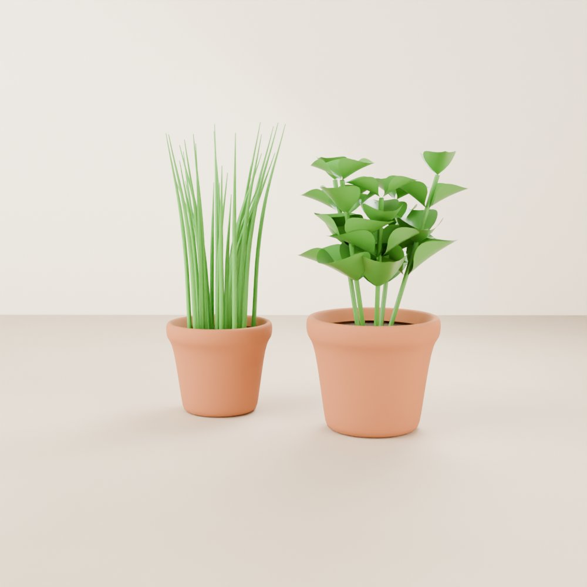

Beginner guide · Pots of soil
Grow herbs and greens in pots.
The way most people start. A pot, some potting mix, and a bright spot are enough for fresh basil, chives, and green onions you can snip for months.

01 The idea
How it works
This is ordinary gardening, just smaller and indoors. Plants grow in a container of potting mix, you give them light and water, and you snip a little at a time so they keep growing back.
It's forgiving, it doesn't need special plant food to get started, and it works for lots of plants. The two things that matter most are enough light and not too much water.
02 Shopping list
What you need
Tick things off as you gather them.
-
Holes in the bottom are a must, so extra water can escape. For herbs, about 15 cm (6 inches) wide is plenty. Dwarf tomatoes and peppers want at least 20 cm (8 inches), and bigger is better. DIY: a yogurt tub, bucket, or tin can with holes poked in the bottom.
-
To catch the water that drains out. DIY: an old plate or a takeout lid.
-
Use bagged potting mix, not soil dug from a garden. Garden soil packs down hard in a pot and can bring in bugs.
-
Easy first picks: green onions, basil, chives, parsley, and mint (give mint its own pot, because it spreads). Small starter plants from a garden centre or grocery store skip the slow seedling stage.
-
Your sunniest window works for herbs for much of the year. Tomatoes and peppers need a lot more light, so indoors they usually need a grow light, especially in winter.
-
Not needed on day one. After a month or so, a liquid fertiliser for houseplants or vegetables keeps things growing.
03 Method
Step by step
-
Fill the pot
Fill it with potting mix up to about 2.5 cm (1 inch) below the rim, so water doesn't spill over. Water it well and let it drain.
-
Plant
For seeds, follow the packet. A good rule is to bury them about twice as deep as the seed is wide, and tiny seeds just get pressed onto the surface. For starter plants, plant them at the same depth they were in their little pot. See our seed-starting guide for more help with seeds.
Shortcut: save the white root ends from store-bought green onions and push them into the soil, roots down. They'll grow back in a week or two.
-
Give it light
Put the pot in your sunniest window. Under a grow light, aim for about 12 to 16 hours a day. If the plants lean hard toward the window, turn the pot every few days.
-
Water the right way
Push a finger into the soil. If the top 2.5 cm (1 inch) is dry, water slowly until it runs out the bottom. If it's still damp, wait. Empty the saucer after about half an hour so the roots don't sit in water. Too much water kills more indoor plants than too little.
-
Feed now and then
After about a month, add liquid plant food every 2 weeks or so, mixed at half the strength on the label. Leafy herbs don't need much. Our plant food guide has more.
-
Harvest little and often
Snip herbs from the top, just above a pair of leaves, and new shoots will grow from there. Take no more than about a third of the plant at once. Cut green onions and chives a few centimetres (an inch or two) above the soil and they'll grow back. Pinch off basil flower buds to keep the leaves coming.
-
Growing tomatoes or peppers?
Pick a dwarf or "patio" type made for containers, and give it plenty of light. Indoors there's no wind or bees, so gently shake or tap the flowers once a day to help them make fruit.
Every plant is a little different, so check the seed packet or plant tag too.
04 Troubleshooting
If something looks wrong
- Yellow lower leaves, soil always wet
- Usually too much water. Let the top of the soil dry out before watering again, and check that the pot drains.
- Drooping even though the soil is wet
- The roots may be rotting from too much water. Let it dry out, and next time water less often.
- Tall, floppy, pale stems
- They're stretching for light. Move the pot to a brighter spot or add a grow light.
- Tiny black flies around the pot
- These are fungus gnats, and they love damp soil. Let the top of the soil dry out between waterings. Yellow sticky traps catch the adults.
- Basil turning bitter or going to flower
- Pinch off the flower buds as soon as you see them, and keep harvesting from the top.
Share your windowsill
Join the Root Collective to swap tips, ask questions, and show off your harvest.
Join us, it's free